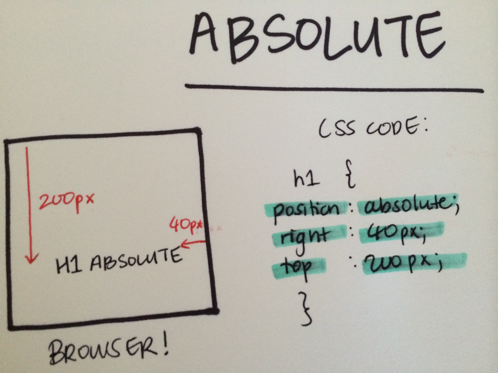
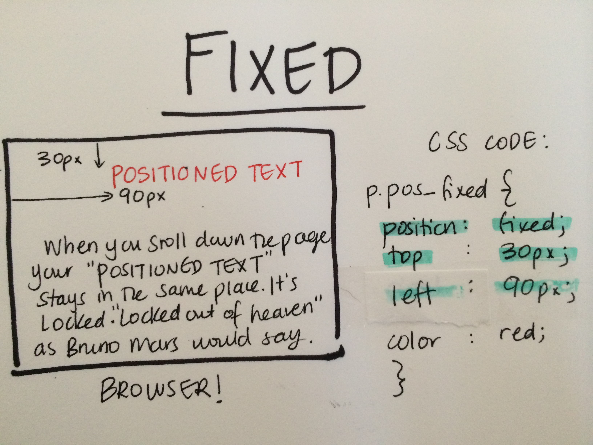

Triangles are my favorite shape. Three points where two lines meet.
Toe to toe, back to back, let's go, my love, it's very late.
POSITIONING 101
Can't get your head around relative, absolute and fixed positioning? Are they like triplets where you can't tell one apart from the other?
Positioning is a pretty important part of CSS. It's integral to your website's flow and whether this translates into easy usability and a successful user experience. While the CSS specification offers us five position properties: static, relative, absolute, fixed, and inherit, this blog will focus on the three majors - ABSOLUTE. RELATIVE. AND FIXED.
Grab a coffee, sit back and muster through this simple guide.
The Low-Down
-
Absolute.
Absolute positioning is the easiest to understand. This tells the browser that whatever is going to be positioned e.g. an image, header etc... should be removed from the normal flow of the document and will be placed in an exact location on the page. You can put it anywhere, and it won't affect or be affected by any other element in the flow. Pretty awesome.
It's kind of like the express line at the airport. You get a special pass and you jump the line waving "haha" to all the plebs as you parade past. So in the context of positioning, an "Absolute" is like a celebrity that gets special privileges, it doesn't need to be locked into a set place in the HTML code, it is free to roam the pridelands as it sees fit. You just need to specify where this is by using the property values of:
- top
- bottom
- left
- right
Next, set your value in px or em.
The example below shows an absolute position with right 40px and top 100px. This means your element will sit 40px in from the right and 100px down from the top.
 -
Relative.
Relative positioning moves an element RELATIVE to its original position. So "left:30" adds 30 pixels to the element's LEFT position from where it currently sits. This is why it's called "relative".
Just like ABSOLUTE, relative positioning uses the same four positioning properties - top, right, bottom, left. But instead of basing the position of the element upon the browser view port (like absolute does), it starts from where the element would be if it were still in the normal flow.
For example, if you had three paragraphs and chose to position the third paragraph as relative, you would see something like this:

- Fixed.
Fixed positioning is a lot like absolute positioning. The position of the element is calculated in the same way as the absolute model - from the sides of the view port. But fixed elements are then fixed in that location, like a watermark. Everything else on the page will then scroll past that element.
Top, right, bottom left are used to set the position of your element, along with values in px or em. Some websites choose to lock their social media buttons on a side bar so as you scroll the page you have every opportunity to contact them. Some websites use LiveChat tools where you can interact via IM, and this feature is usually set at a fixed positioning remaing constant on your browser at all times.
